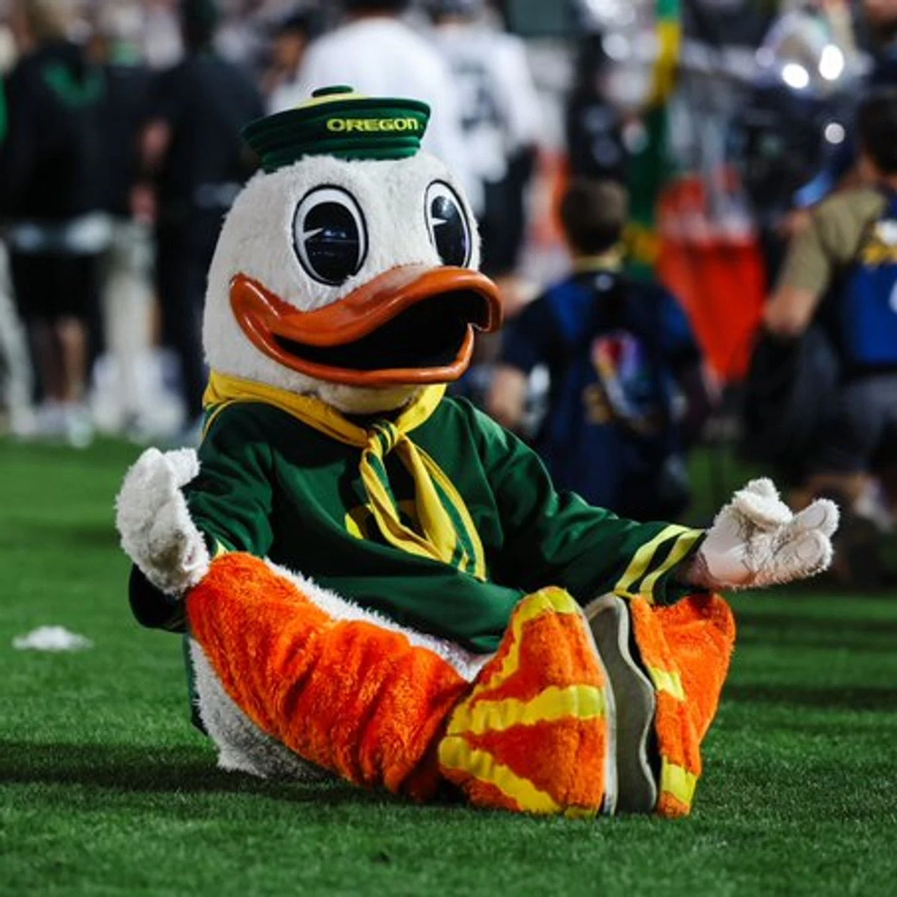

The Oregon Ducks are the athletic teams representing the University of Oregon, known for their football and track and field programs. The university is in Eugene, Oregon, and its teams compete in the NCAA Division I, now as a member of the Big Ten Conference. The mascot is "The Duck," which originated from the university's previous nickname, the "Webfoots," and is based on the Disney character Donald Duck.
